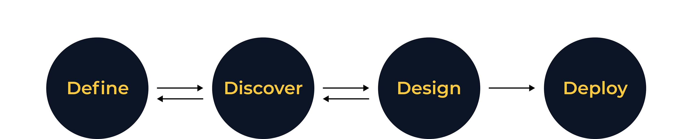
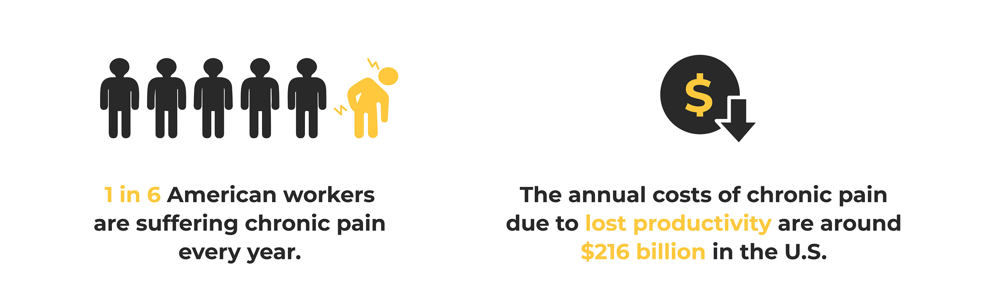
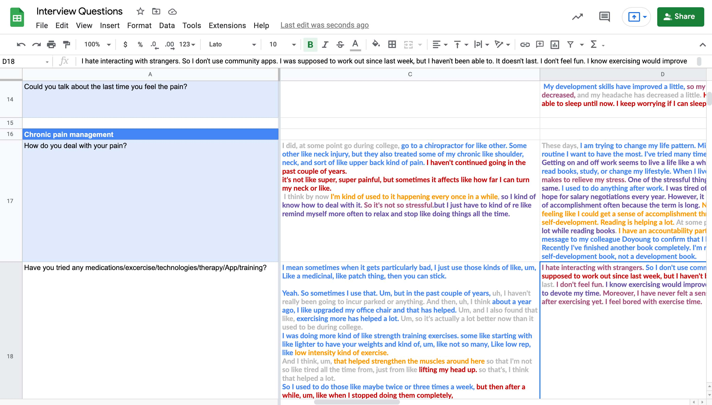
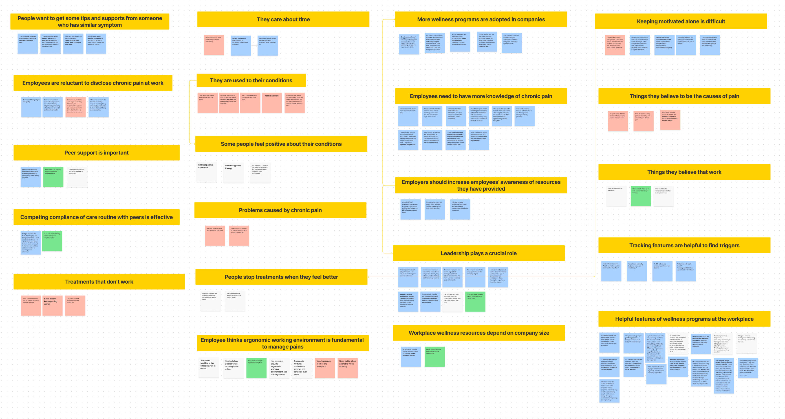
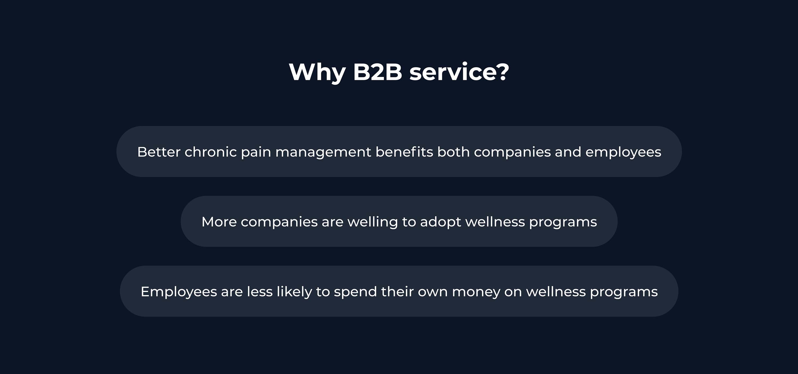
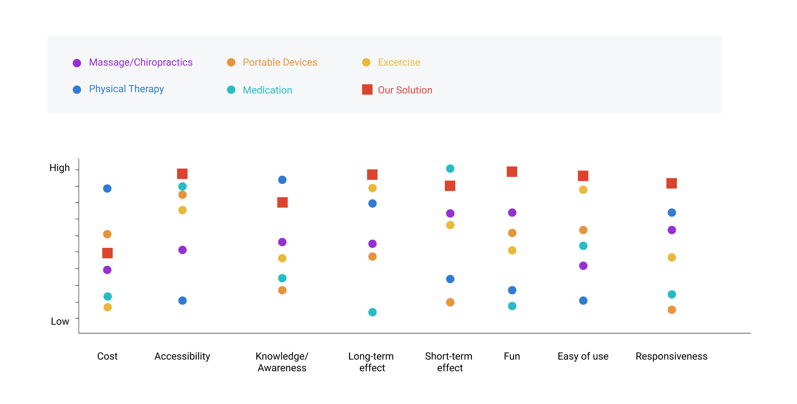
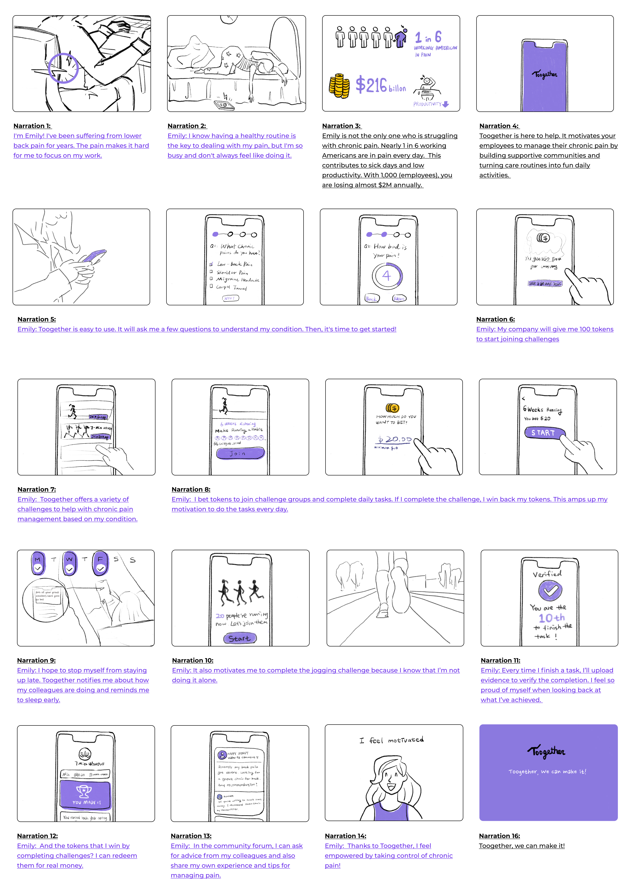
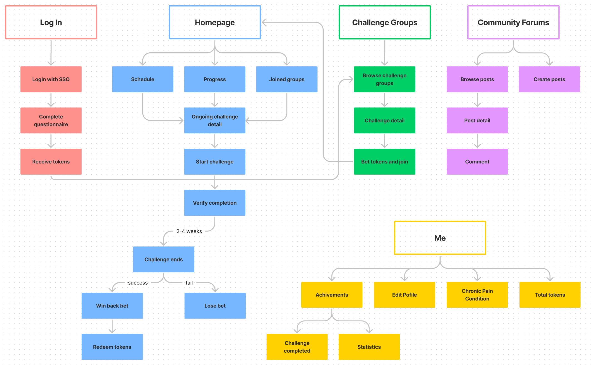
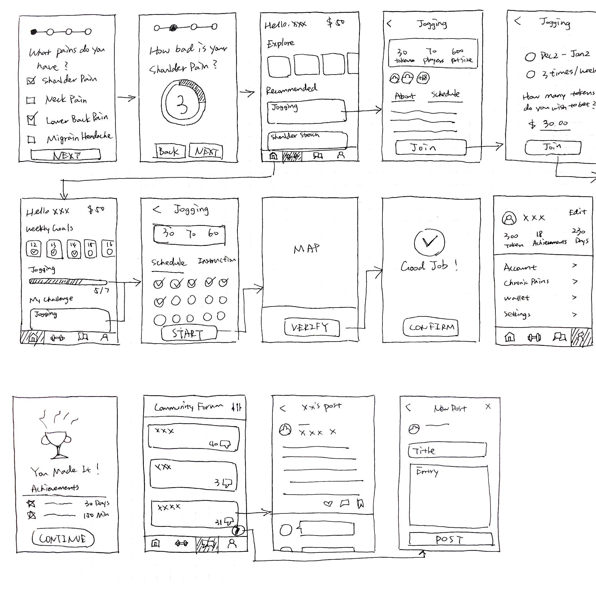
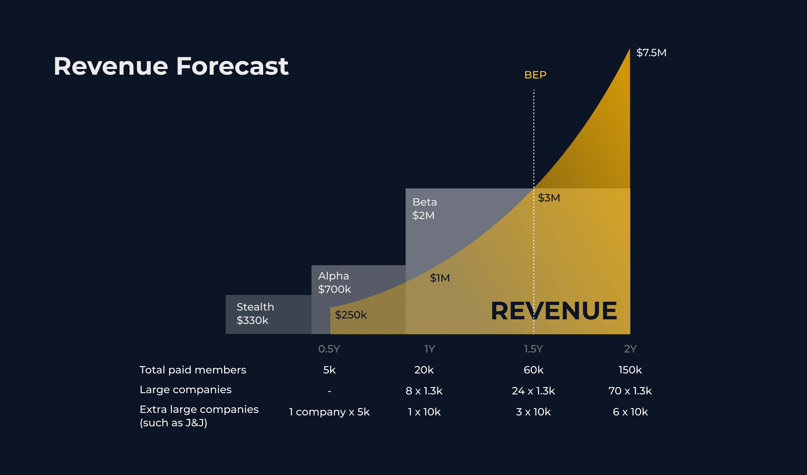

TOOGETHER
Product Design · 2021
OVERVIEW
As a complex and incurable disease, chronic pain is the leading contributor to sick leaves at the workplace. How might we help workers in the United States who have chronic pain complete their care routine? My team worked with Sean Ferry, our sponsor at Johnson & Johnson to tackle this problem in 15 weeks. We designed a B2B mobile app named Toogether that motivates people to manage their chronic pain by building supportive communities and turning care routines into fun daily activities.
Achievement: Winner of Strategic Innovation in Product/Service Design Case 2021
MY CONTRIBUTIONS
- Conducted secondary research, 10 user interviews, and 3 expert interviews.
- Generated user journey map and user behavior model.
- Created storyboards to test concepts with users.
- Crafted wireframes and interactive hi-fi prototypes.
- Filmed and edited a pitch video with Adobe After Effects.
- Presented the progress to our instructors and sponsor weekly.
DURATION
15 Weeks
MY ROLE
Product Designer
TEAM
3 Product Designers
(Young Kim, Yazhen Zhang)
TOOLS
Figma
FigJam
ProtoPie
Adobe After Effects
01. PROCESS
PROJECT OUTLINE
In general, there were four phases of our project, define, discover, design, and deploy. We moved back and forth among the four phases, as the design process is not linear. There were times when we needed to go back and redefine our challenge and when we shifted our research focus as we learned more about the topic.
02. DEFINE
ASK THE RIGHT QUESTION
“How might we enable those that manage chronic pain to increase compliance in their care routine by maximizing their physical and mental wellbeing?” We received this challenge from our sponsor. The challenge appeared to be broad, as there are a variety of chronic pains and corresponding care routines. Therefore, we needed to narrow down the scope and develop a problem statement that was both worthy and feasible.
Context Research
We conducted secondary research to understand the problem context. Through the research, we gained a deeper understanding of scientific facts about chronic pain and also found that chronic pain associated with work was a severe problem and was put in the spotlight these years.
Narrow Down the Scope
Based on the context research, we decided to focus on workers in the United States who have chronic pain. Below is our updated challenge.
03. DISCOVER
SECONDARY RESEARCH
We carried out more comprehensive research on chronic pain in the aspects of science, sociology, economics, and technology. Here is a summary of what we found.
- Non-medical and non-surgical treatments are preferable, such as structured exercise, cognitive behavioral therapy, and yoga. They avoid the risk of drug addiction and prevent severe pain that requires surgeries.
- People with chronic pain are three times more likely to have depression and anxiety.
- Chronic back pain costs employers almost $1,700 per employee every year due to loss of productivity, equating to around $230 billion to businesses across the nation.
03. DISCOVER
USER INTERVIEW
We conducted 10 qualitative user interviews to discover their needs and obstacles.
Research Goal
- How do people manage their chronic pain?
- What are their pain points?
- What resources do their employers provide for chronic pain?
Research Methods
- Semi-direct interview: When structuring our interview questions, we only put several main questions and give more room for follow-up questions. In this way, we could dig deeper into the interviewees' experiences that stood out to us.
- Abstract images: Since it was hard for people to describe how they felt about their pain, both physically and mentally, we showed them a group of abstract images and asked them to choose images that best represent their feeling and explain why. This method visualized abstract feelings and inspired the interviewees to speak more.
Synthesis
We applied color code to categorize interviewees' transcripts into Say, Think, Do, Feel, Attention Catching, and Issue. This method inspired us not to rely solely on what interviewees said to understand their condition and mindfully organize the transcripts.
After that, we created an affinity diagram to synthesize primary and secondary research. We put similar findings to the same cluster and linked relevant clusters.
Key Takeaways from Research
- Instead of feeling anxious about their chronic pain, most people have been used to their pain after years.
- Most of them know the right ways of managing their pain (doing physical exercises, taking breaks frequently while working, visiting physical therapy regularly), but they lack motivation, especially when they are busy. They care about time more than money.
- Large companies usually have more resources than smaller companies.
- A supportive atmosphere at work and accountability partners are helpful for chronic pain management.
03. DISCOVER
EXPERT INTERVIEW
Based on insights from the secondary research and user interview, we decided our solution to be B2B for the following reasons.
Since lots of information about existing B2B products or services were inaccessible online, we interviewed three experts to understand the market and explore opportunities. Experts we talked to included an Engagement Manager of Health Fitness at Johnson & Johnson, a designer of Human Performance Institute at Johnson & Johnson, and a Product Manager of Hinge Health. Here are what we learned from them.
- Employee engagement in wellness programs is low (around 23%). Internal marketing is the biggest challenge even for Johnson & Johnson, the leader of workplace wellness.
- Long-term behavior change is difficult.
04. DESIGN
USER NEED ATTRIBUTE DIAGRAM
We created a diagram by mapping our ideal solution and the commonly used solutions to 8 user need attributes. Then we asked 3 target users to do a card sorting with the 8 atributes by ranking them from the least to the most important. Based on this activity, we found that people prioritized accessibility and ease of use. They all knew what solutions were healthier in the long term, but they needed to feel empowered and motivated at the moment.
04. DESIGN
EMPOWER BEHAVIOR CHANGE
The first diagram shows the current user behavior. People only start to take their chronic pain seriously when the pain gets unbearable. Then, they become aware of the importance of daily exercise and healthy working and living habits, but their motivation goes up and down, which keeps them from sticking to the care routine. When their pain gets better, the motivation goes all the way down, and they abandon the healthy routine.
How do we change user behavior? There Are two factors of behavior change, motivation and feasibility. Higher motivation and higher feasibility lead to the success of behavior change. Our product, Toogether, maintains users’ motivation through social and financial incentives and lowers the activation threshold by increasing the feasibility of care routines. Specifically, users choose to join different accountability groups based on their chronic pain condition to do activities with their colleagues. They bet money when they join a group and earn back the bet if they complete a challenge.
04. DESIGN
TESTING WITH STORYBOARDS
We created a storyboard and presented it to four users to check if our solution appealed to them. They expressed disapproval of having employees bet their own money to join challenges and expected employers to pay more for employees' wellness. They were also concerned about privacy. Therefore, we decided to have employers pay their employees tokens to join challenges (employers would be willing to pay more as long as the ROI is positive) and anonymize users in community forums.
04. DESIGN
USER FLOW
04. DESIGN
WIREFRAME
04. DESIGN
HIGH-FIDELITY PROTOTYPE & FEATURES
05. DEPLOY
PROPOSED ACTION PLAN & BUSINESS MODEL
The success criteria of our product are participation rate, challenge completion rate, user retention rate, reduction in sick leave, net promoter score. Our target customers are large companies in the U.S. (companies with more than 500 employees). We will generate revenue from the B2B subscription model.
At the stealth stage, we will develop our MVP and start from 5,000 employees of Johnson & Johnson in six months. Leveraging a successful track record with Johnson & Johnson, we believe we will be able to grow our business exponentially. In order to achieve the growth, we need a total investment of $3M, starting from $330K in the stealth stage.
06. TAKEAWAY
LEARN FROM USERS AND STAY OBJECTIVE
The topic of chronic pain is challenging to me, as it is a complex disease in the medical discipline, and I have not had any chronic pain. The design process was a learning process. From someone who knew nothing about chronic pain to someone with more knowledge in the disease than average individuals, I constantly learned from online resources, people who suffer from chronic pain, and experts of wellness programs.
"Don't fall in love with your first design." I heard this advice many times, but putting it into action was harder than I thought. We had disagreements sometimes when deciding on design solutions. It was hard to abandon our own ideas. Eventually, we settled our arguments by testing concepts with users and researching. It was vital to stay objective and design with users instead of letting self-consciousness drive the design process.